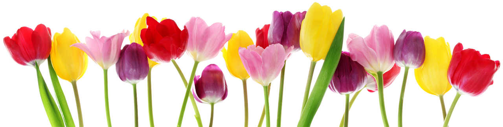

Nederland is een klein land, maar heeft vele dingen te doen. Waar Nederland onder andere heel bekend voor staat is natuurlijk de hoofdstad Amsterdam. De grootste reden waarom Amsterdam zo bekend is, is door haar grote hoeveelheid aan coffeeshops. Aangezien wiet in meeste landen niet legaal is, is dan in Nederland wel zo en daarvoor komen veel jonge toeristen naar Amsterdam. Maar in Amsterdam kun je meer doen dan je gezondheid verslechteren. Je kunt ook naar Madame Tussaud, dit is een museum waar verschillende wassen beelden staan van bekendheden. Ook heeft Amsterdam een grote hoeveelheid aan winkels waar je je helemaal blut kunt shoppen.
Maar genoeg over Amsterdam, want waar mensen ook vaak aan denken bij Nederland zijn natuurlijk tulpen. Want in het noorden van Flevoland, rondom Emmeloord, vind je de grootste tulpenvelden van Nederland. Hier kun je prachtige foto’s maken waar je later trots op kunt zijn. Of natuurlijk de welkbekende windmolens. Die vaak ook te vinden zijn bij het platteland waar je mooie bollenvelden vindt.
Maar natuurlijk staat Nederland ook bekend om de stroopwafels. Dit spreekt natuurlijk erg voor zich maar dit zijn dunne wafels met daartussen stroop. Voor Nederlanders is dit iets heel normaals, maar toeristen zijn hier vaak erg positief over te spreken, dus is het zeker een aanrader. Ook staat Nederland bekend om haar stamppotten die met veel verschillende ingrediënten worden bereid, maar een bekende is boerenkool. Dit wordt dus ook aangeraden om een keer te proberen.
In Den Haag is ook een leuke bezienswaardigheid te vinden. Namelijk een miniatuur versie van Amsterdam genaamd Madurodam. Hier kun je letterlijk heel Amsterdam in het klein bekijken. Heel handig als je niet genoeg tijd zou hebben om door heel Amsterdam te lopen. Natuurlijk is het niet volledig accuraat omdat Amsterdam ook veranderd en dat niet constant word bijgehouden bij Madurodam, maar het is alsnog leuk om een keer gezien te hebben.
